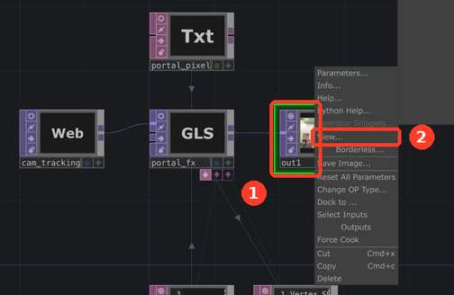

Поднимаешь руки, и между пальцами появляется кислотное окно. Собирается за минуту.
derivative.ca, бесплатная версия.
Скачай файл glitch_portal_setup.py и перетащи его на тёмное поле с нодами. Появится розовая нода.
# GLITCH PORTAL for TouchDesigner
# Drag this file into a TouchDesigner network -> right-click the new Text DAT -> Run Script.
# Builds a 'hand_portal' component next to this DAT: webcam + MediaPipe hand tracking,
# psychedelic effect between thumbs and index fingers of both hands.
PORT = 9981
HTML = '<!doctype html>\n<html><head><meta charset="utf-8">\n<style>html,body{margin:0;background:#000;overflow:hidden}canvas{display:block;width:100vw;height:100vh}#s{position:fixed;left:20px;top:20px;color:#0f0;font:32px monospace;z-index:9}</style>\n</head><body>\n<canvas id="c" width="1280" height="720"></canvas><div id="s">loading...</div>\n<video id="v" playsinline muted style="display:none"></video>\n<script type="module">\nimport {FilesetResolver, HandLandmarker} from "https://cdn.jsdelivr.net/npm/@mediapipe/tasks-vision@0.10.14/vision_bundle.mjs";\nconst S=document.getElementById(\'s\'), v=document.getElementById(\'v\'), c=document.getElementById(\'c\'), g=c.getContext(\'2d\');\nlet ws=null;\nfunction st(t){S.textContent=t; try{ if(ws&&ws.readyState===1) ws.send(JSON.stringify({status:t})); }catch(e){} }\nfunction connect(){ try{ ws=new WebSocket(\'ws://\'+location.host); ws.onopen=()=>ws.send(JSON.stringify({status:\'ws open; \'+S.textContent})); ws.onclose=()=>setTimeout(connect,1000);}catch(e){setTimeout(connect,1000);} }\nconnect();\nconst B=[[0,1],[1,2],[2,3],[3,4],[0,5],[5,6],[6,7],[7,8],[5,9],[9,10],[10,11],[11,12],[9,13],[13,14],[14,15],[15,16],[13,17],[17,18],[18,19],[19,20],[0,17]];\ntry{\n st(\'loading mediapipe\');\n const files=await FilesetResolver.forVisionTasks("https://cdn.jsdelivr.net/npm/@mediapipe/tasks-vision@0.10.14/wasm");\n const hl=await HandLandmarker.createFromOptions(files,{baseOptions:{modelAssetPath:"https://storage.googleapis.com/mediapipe-models/hand_landmarker/hand_landmarker/float16/1/hand_landmarker.task",delegate:"GPU"},runningMode:"VIDEO",numHands:2});\n st(\'requesting camera\');\n v.srcObject=await navigator.mediaDevices.getUserMedia({video:{width:1280,height:720},audio:false});\n await v.play(); st(\'running\'); setTimeout(()=>{S.textContent=\'\';},1500);\n let last=-1;\n function loop(){\n const W=c.width,H=c.height;\n g.save(); g.translate(W,0); g.scale(-1,1); g.drawImage(v,0,0,W,H); g.restore();\n let hands=[];\n if(v.currentTime!==last){ last=v.currentTime;\n const r=hl.detectForVideo(v,performance.now());\n hands=(r.landmarks||[]).map(h=>h.map(p=>[1-p.x,p.y]));\n window._h=hands;\n } else hands=window._h||[];\n for(const h of hands){\n g.strokeStyle=\'#ff2a1a\'; g.lineWidth=6;\n for(const [a,b] of B){g.beginPath();g.moveTo(h[a][0]*W,h[a][1]*H);g.lineTo(h[b][0]*W,h[b][1]*H);g.stroke();}\n g.fillStyle=\'#4dff3a\';\n for(const p of h){g.beginPath();g.arc(p[0]*W,p[1]*H,9,0,7);g.fill();}\n }\n if(ws&&ws.readyState===1) ws.send(JSON.stringify({hands}));\n requestAnimationFrame(loop);\n }\n loop();\n}catch(e){ st(\'ERROR: \'+e); console.error(e); }\n</script></body></html>\n'
try:
root = me.parent()
except Exception:
root = op('/project1')
old = root.op('hand_portal')
if old: old.destroy()
P = root.create(baseCOMP, 'hand_portal')
try:
P.nodeX, P.nodeY = me.nodeX + 250, me.nodeY
except Exception:
P.nodeX, P.nodeY = 0, -400
html = P.create(textDAT, 'page_html'); html.text = HTML; html.nodeX, html.nodeY = -600, 300
cb = P.create(textDAT, 'webserver_callbacks'); cb.nodeX, cb.nodeY = -600, 150
cb.text = '''import json
def onHTTPRequest(webServerDAT, request, response):
response['statusCode'] = 200
response['statusReason'] = 'OK'
response['content-type'] = 'text/html'
response['data'] = op('page_html').text
return response
def onWebSocketOpen(webServerDAT, client, uri):
return
def onWebSocketClose(webServerDAT, client):
return
def onWebSocketReceiveText(webServerDAT, client, data):
try:
hands = json.loads(data).get('hands', [])
except Exception:
return
d = json.loads(data)
if 'status' in d:
print('[hands page]', d['status'])
parent().store('status', d['status'])
return
c = op('pts')
if len(hands) >= 2:
hands = sorted(hands[:2], key=lambda h: h[0][0])
A, B = hands
q = [A[4], A[8], B[8], B[4]]
for i, p in enumerate(q):
getattr(c.par, 'const%dvalue' % (2*i)).val = p[0]
getattr(c.par, 'const%dvalue' % (2*i+1)).val = 1 - p[1]
c.par.const8value = 1
else:
c.par.const8value = 0
return
def onWebSocketReceiveBinary(webServerDAT, client, data):
return
def onServerStart(webServerDAT):
return
def onServerStop(webServerDAT):
return
'''
ws = P.create(webserverDAT, 'webserver1'); ws.nodeX, ws.nodeY = -400, 150
ws.par.port = PORT
ws.par.callbacks = cb
ws.par.active = True
pts = P.create(constantCHOP, 'pts'); pts.nodeX, pts.nodeY = -400, -150
names = ['x0','y0','x1','y1','x2','y2','x3','y3','active']
pts.seq.const.numBlocks = len(names)
for i, n in enumerate(names):
getattr(pts.par, 'const%dname' % i).val = n
getattr(pts.par, 'const%dvalue' % i).val = 0
filt = P.create(filterCHOP, 'smooth'); filt.nodeX, filt.nodeY = -200, -150
filt.inputConnectors[0].connect(pts)
filt.par.width = 0.12
hands = P.create(nullCHOP, 'hands'); hands.nodeX, hands.nodeY = 0, -150
hands.inputConnectors[0].connect(filt)
wr = P.create(webrenderTOP, 'cam_tracking'); wr.nodeX, wr.nodeY = -200, 150
for pn, v in [('outputresolution','custom'), ('resolutionw',1280), ('resolutionh',720)]:
try: setattr(wr.par, pn, v)
except Exception as e: print('webrender par', pn, e)
wr.par.mediastream = True
wr.par.url = 'http://localhost:%d/' % PORT
try: wr.par.active = True
except Exception: pass
frag = P.create(textDAT, 'portal_pixel'); frag.nodeX, frag.nodeY = 0, 300
frag.text = '''uniform vec4 uP01;
uniform vec4 uP23;
uniform vec4 uMisc;
out vec4 fragColor;
float hash(vec2 p){ return fract(sin(dot(p, vec2(12.9898,78.233))) * 43758.5453); }
vec3 pal(float t){ return 0.5 + 0.5*cos(6.28318*(t + vec3(0.0, 0.33, 0.67))); }
void main(){
vec2 uv = vUV.st;
vec4 c = texture(sTD2DInputs[0], uv);
vec2 q[4] = vec2[4](uP01.xy, uP01.zw, uP23.xy, uP23.zw);
bool ins = false;
for (int i = 0, j = 3; i < 4; j = i++) {
if (((q[i].y > uv.y) != (q[j].y > uv.y)) &&
(uv.x < (q[j].x - q[i].x) * (uv.y - q[i].y) / (q[j].y - q[i].y + 1e-6) + q[i].x)) ins = !ins;
}
float t = uMisc.x;
vec2 px = uv * uTD2DInfos[0].res.zw;
float lum = dot(c.rgb, vec3(0.299, 0.587, 0.114));
float grain = hash(floor(px / 2.0) + floor(t * 24.0));
float band = lum * 3.5 + grain * 0.18 - t * 0.25;
vec3 psy = pal(band);
psy = mix(psy, vec3(1.0, 0.1, 0.9), smoothstep(0.55, 0.95, lum) * 0.6);
psy *= 0.85 + 0.3 * grain;
float m = (ins ? 1.0 : 0.0) * clamp(uMisc.y, 0.0, 1.0);
fragColor = TDOutputSwizzle(vec4(mix(c.rgb, psy, m), 1.0));
}
'''
glsl = P.create(glslTOP, 'portal_fx'); glsl.nodeX, glsl.nodeY = 0, 150
glsl.par.pixeldat = frag
glsl.inputConnectors[0].connect(wr)
glsl.seq.vec.numBlocks = 3
H = "op('hands')"
setv = [('uP01', ['x0','y0','x1','y1']), ('uP23', ['x2','y2','x3','y3']), ('uMisc', None)]
for i, (nm, ch) in enumerate(setv):
getattr(glsl.par, 'vec%dname' % i).val = nm
comps = ['x','y','z','w']
if ch:
for k, cn in enumerate(ch):
getattr(glsl.par, 'vec%dvalue%s' % (i, comps[k])).expr = "%s['%s']" % (H, cn)
else:
glsl.par.vec2valuex.expr = 'absTime.seconds'
glsl.par.vec2valuey.expr = "%s['active']" % H
out = P.create(nullTOP, 'out1'); out.nodeX, out.nodeY = 200, 150
out.inputConnectors[0].connect(glsl)
out.viewer = True
P.par.opviewer = out
P.viewer = True
out.openViewer()
print('hand_portal built')
Разреши доступ к камере, если Mac спросит, и подожди 10 секунд.
Зайди в кубик hand_portal: наведи на него мышку и нажми I. Потом правый клик по out1 → View…

Подними обе руки и разведи большой и указательный пальцы.
Сохранить проект: Cmd+S. Проверено на Mac.